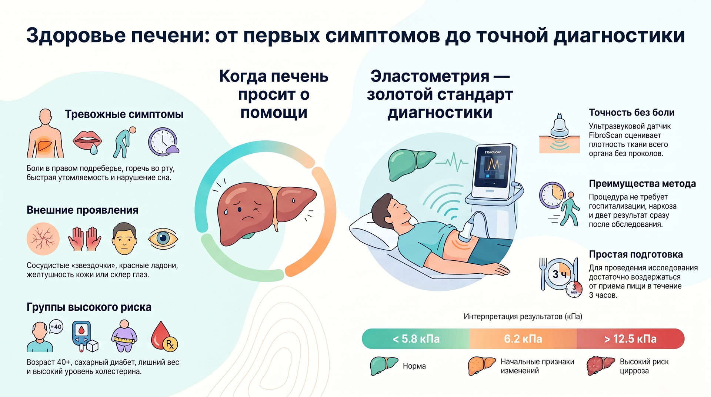
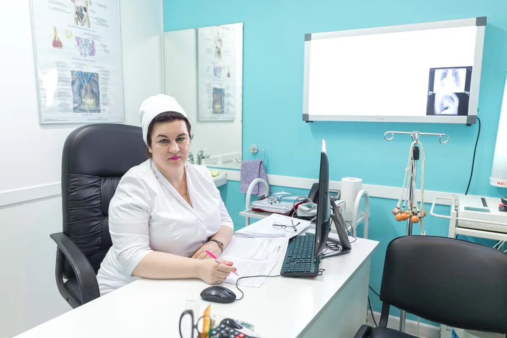
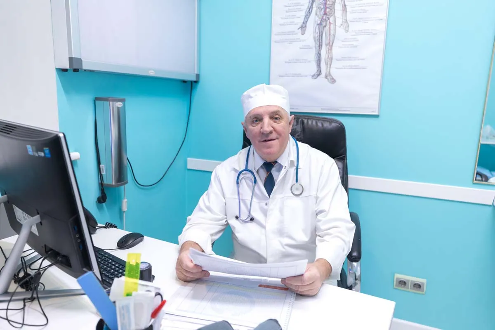
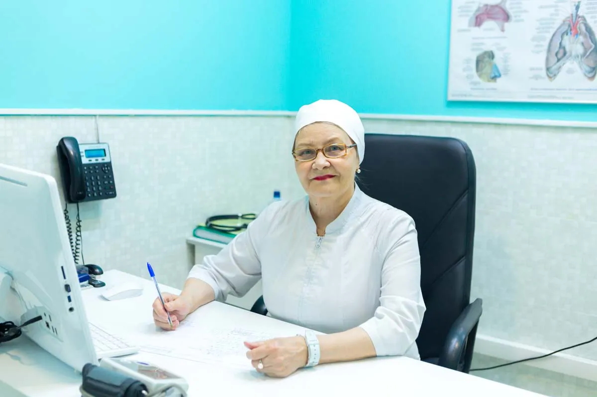
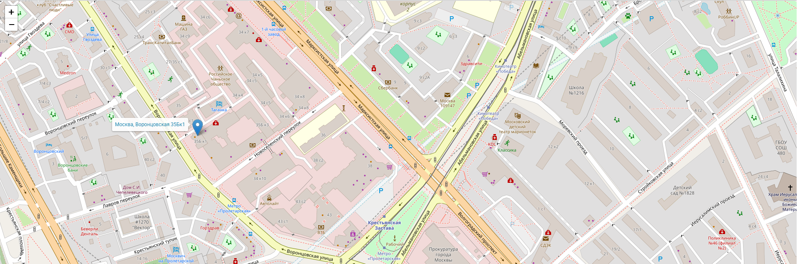

Симптомы заболевания печени
Если есть хронические заболевания печени, изменения в органе происходят медленно. При остром поражении печени симптомы становятся ярко выраженными.
Обратите пристальное внимание на первые признаки заболевания печени. Это тревожные симптомы, при которых нужно срочно показаться врачу-специалисту.
Первые тревожные симптомы
- Боли в правом подреберье
- Слабость и повышенная утомляемость
- Недомогание и нарушение сна
- Головная боль и головокружение
- Жажда и горечь во рту
- Нарушение менструального цикла у женщин
- Эректильная дисфункция у мужчин
Малые печеночные признаки
При осмотре врач может выявить симптомы, характерные и для других заболеваний. Если присутствуют несколько признаков одновременно, вероятность заболевания печени повышается.
- Сосудистые «звездочки»
- Красные ладони
- Малиновый цвет языка
- Дрожание пальцев рук и кистей
- Темные пятна на коже, сухость, следы расчесов
- Высыпания и кровоизлияния на коже
Диагностика помогает выявить состояние печени

Когда нужно обследование
- Боль и дискомфорт
- Изменения цвета кожи и глаз
- Усталость и слабость
- Потеря аппетита и тошнота
Особенно важно обратиться
- При желтухе
- При болях в правом подреберье
- При нескольких симптомах одновременно
- Пациентам из группы риска ежегодно
Как проходит диагностика
Для постановки правильного диагноза врач назначает лабораторную стандартизированную диагностику, аппаратное обследование и проводит медицинский осмотр пациента.
Пациентам из группы риска рекомендовано ежегодно проходить осмотр у гепатолога с обследованием для своевременного выявления патологического процесса.
Рассчитайте перед приемом врача гепатолога чек-лист
Спокойно, без спешки заполните чек-лист дома. Он поможет быстрее подготовиться к консультации и ничего не упустить на приеме.
Скачать чек-листНе откладывайте заботу о своей печени. Берегите себя и будьте здоровы!



Почему нужно обратиться к нам?
Наши врачи



Контакты
Москва, ул. Воронцовская, 35Б к1
+7 (499) 290-12-86
Понедельник - Пятница: 09:00 - 23:00
Суббота и Воскресенье: 09:00 - 21:00
Таганская - 12 минут пешком
Пролетарская - 4 минуты пешком
Муниципальная, у центра
Главный врач: chief@mc-help.ru
Почта центра: callcenter@mc-help.ru
Через регистратуру
На сайте
Юридическая информация
Посмотреть документыМы осуществляем деятельность на основании медицинских лицензий в соответствии с рекомендациями Минздрава.